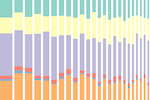

COVID-19 Resources
This page collates all the outputs we have produced relating to the coronavirus pandemic.
Apps
COVID-19 monitor
Dashboard visualising the week-on-week change in coronavirus cases in English local authorities using Public Health England data. Further information about Coronavirus (COVID-19) can be found at: gov.uk/coronavirus.
Local COVID-19
Explore confirmed cases of coronavirus, registered deaths and clinical vulnerabilities at local authority level.
Trafford COVID-19
Trend in confirmed coronavirus cases in Trafford. Includes charts, the rate of cases mapped by local area and a comparison table with Greater Manchester Local Authorities and England.
Reports
Claimant Count and Universal Credit in Trafford
Analysis of claimant count and Universal Credit claims in Trafford over time, including area and age-group breakdowns. This report is updated on a regular basis using data from Nomis.
Charticles


Data
Open Datasets
Trafford specific open datasets in CSV format that help to identify residents most vulnerable to the health, economic and social effects of COVID-19. Other Local Authorities in England can use the scripts provided and links to the data sources to create the same datasets for their area.